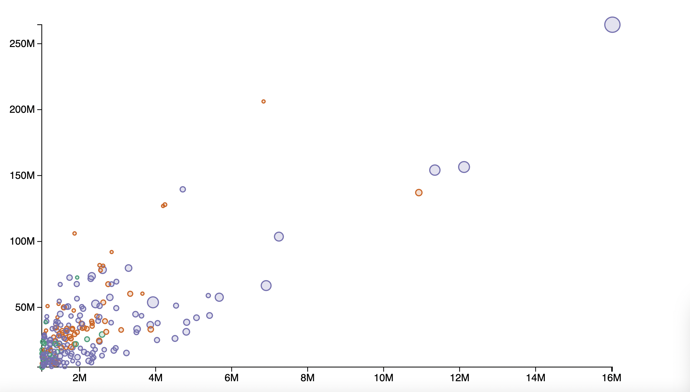
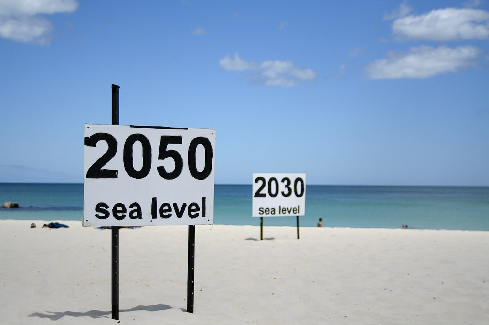
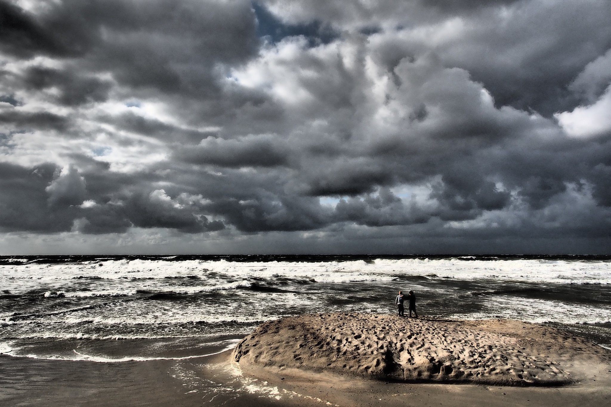
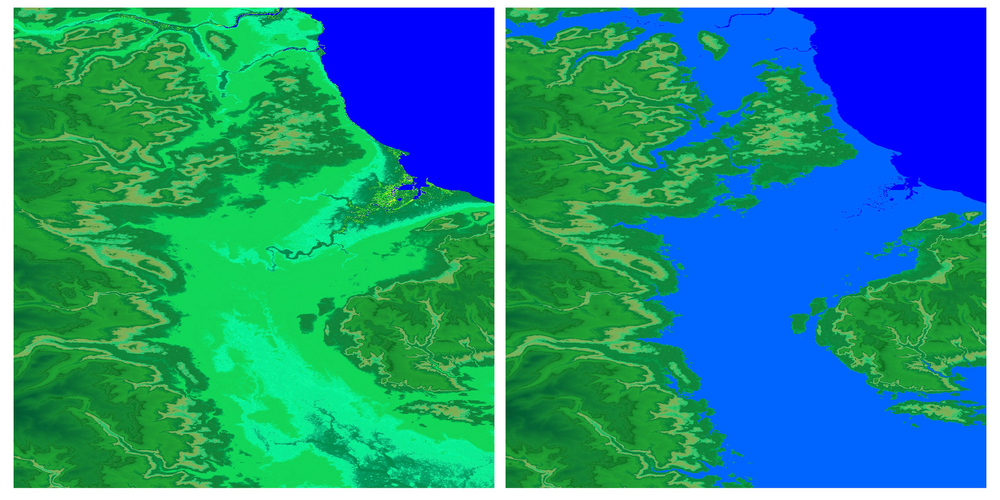
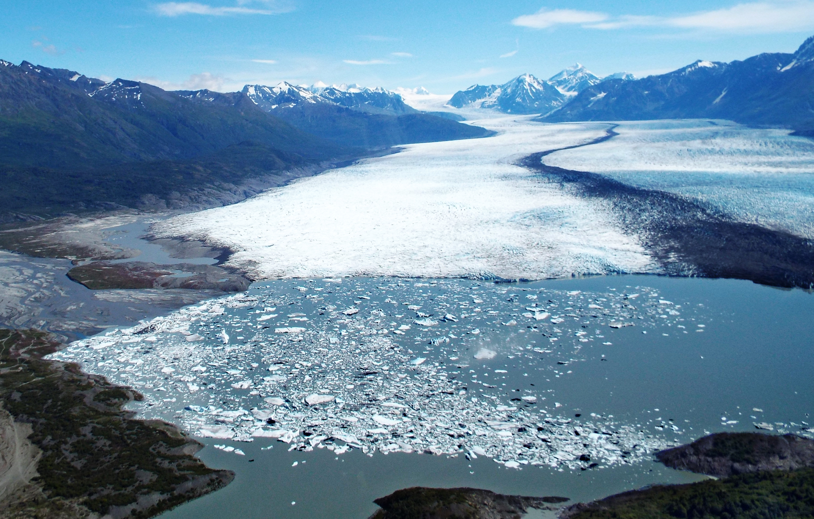
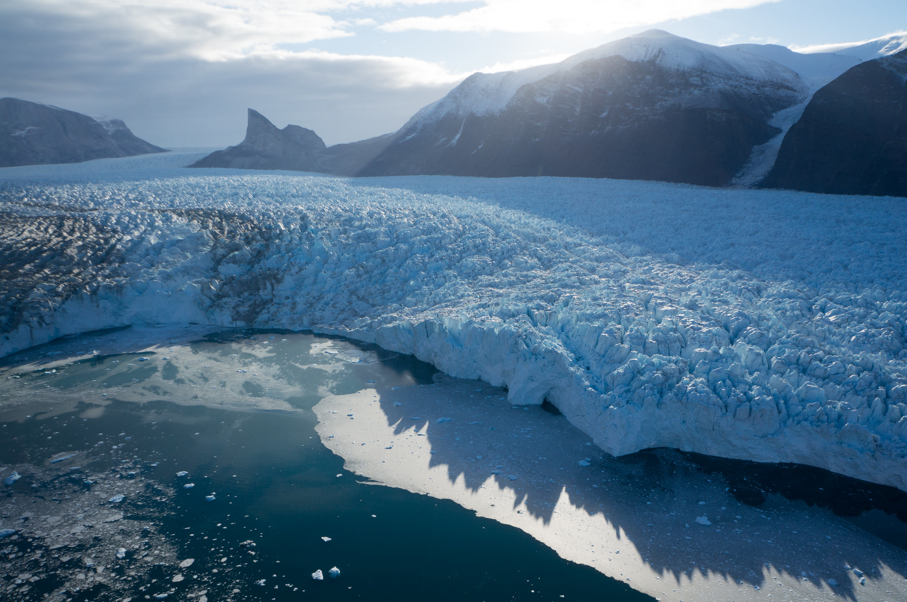
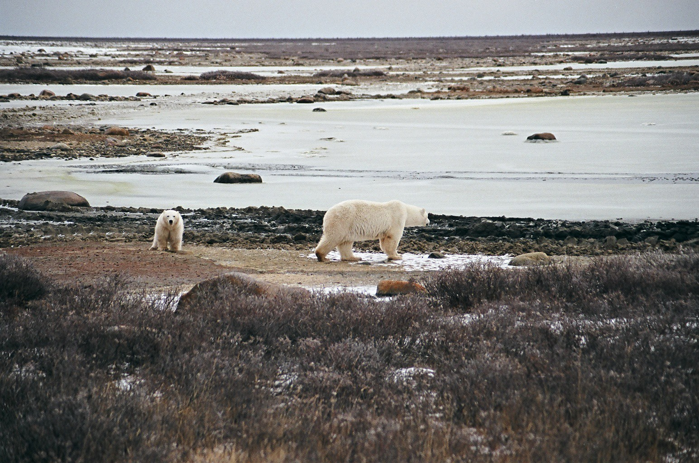

Rising Temperatures, Rising Seas:
The Urgent Need for Climate Action
By Zhaozhou Dai
As the Earth's climate continues to change at an unprecedented rate, scientists are sounding the alarm about the potentially catastrophic impacts of rising temperatures and sea levels. In recent years, we have seen a steady increase in the average global temperature, with many regions experiencing extreme weather events, rising sea levels, and the loss of critical ecosystems.
One of the most concerning consequences of rising temperatures is the melting of the Earth's ice caps and glaciers, which is causing sea levels to rise at an accelerated rate. According to the latest estimates from the Intergovernmental Panel on Climate Change (IPCC), sea levels could rise by anywhere from 0.3 to 2.5 feet (0.09 to 0.77 meters) by the end of the century, depending on how much action is taken to reduce greenhouse gas emissions.
This has significant implications for low-lying areas and coastal cities around the world, many of which are already experiencing the effects of sea-level rise. From Miami to Mumbai, millions of people are at risk of flooding, erosion, and displacement as sea levels continue to rise. As the global community grapples with the urgent need to address the root causes of climate change, it is crucial that we understand the impacts of rising temperatures and sea levels and take action to mitigate their worst effects.
The effects of rising temperatures and sea levels are already being felt around the world. In some regions, extreme heatwaves are becoming more frequent and intense, leading to droughts, wildfires, and crop failures. In others, sea levels are rising, causing coastal flooding, erosion, and damage to infrastructure. These impacts are not only causing significant economic losses but are also threatening the health and wellbeing of millions of people.
The average global temperature has increased by about 1.1 degrees Celsius (2 degrees Fahrenheit) since the pre-industrial era. (Source: IPCC)
2020 was one of the three warmest years on record, with the global temperature being 1.2 degrees Celsius (2.2 degrees Fahrenheit) above pre-industrial levels. (Source: World Meteorological Organization)
The Arctic has been warming at a rate of two to three times faster than the global average, leading to significant ice loss and permafrost thaw.
Sea levels have risen by an average of about 8 inches (20 centimeters) since 1880, with the rate of sea-level rise accelerating in recent decades. (Source: NASA)
The IPCC projects that sea levels could rise by anywhere from 0.3 to 2.5 feet (0.09 to 0.77 meters) by the end of the century, depending on future greenhouse gas emissions.
Extreme sea-level events that used to occur once per century could occur every year by mid-century in many regions, according to the IPCC. (Source: IPCC)
Some island nations and low-lying coastal areas are already experiencing the impacts of sea-level rise, with some communities having to relocate due to flooding and erosion. (Source: United Nations)
According to NASA, the last decade (2011-2020) was the warmest decade on record, with each year being among the top 10 warmest years on record. This trend is expected to continue unless significant action is taken to reduce greenhouse gas emissions. (Source: NASA)
Rising temperatures have become one of the most pressing issues facing our planet. The average global temperature has increased by about 1.1 degrees Celsius (2 degrees Fahrenheit) since the pre-industrial era, with 2020 being one of the three warmest years on record. This warming trend is largely driven by human activities such as burning fossil fuels, deforestation, and agriculture.
One of the most concerning impacts of rising temperatures is the melting of ice caps and glaciers in the Arctic and Antarctic regions. This melting not only contributes to rising sea levels but also has profound impacts on the Earth's ecosystems, including the loss of habitats for wildlife and changes in the timing of seasonal events such as bird migrations and plant flowering.
Rising temperatures also exacerbate extreme weather events such as heatwaves, droughts, and wildfires. In recent years, we have seen the devastating impacts of these events in many parts of the world, including in California, Australia, and the Amazon rainforest. These events not only pose a significant threat to human life and infrastructure but also have long-term impacts on ecosystems and the global economy.
Addressing the root causes of rising temperatures is crucial if we hope to avoid the worst impacts of climate change. This means reducing greenhouse gas emissions by transitioning to renewable energy sources, promoting sustainable land use practices, and implementing policies that prioritize climate action. By taking action now, we can help ensure a more stable and sustainable future for generations to come.
Because the country names also cover the areas' names, the top ten list shows Europe and some European countries. It also has been illustrated that Europe is affected mostly by climate change with its neighbour Russian Federation.
And not surprisingly, all countries on the list are industrialized countries, excluding 'Svalbard and Jan Mayen Islands.'
This area is top of the list, and near Europe and Russia, also it is the arctic area, its natural life is in danger because of this reason.
[Another barchart of top ten countries that have lowest temperature change in the last decades will be done to replace by D3.]
As the world grapples with the ongoing COVID-19 pandemic, another global crisis continues to loom large: climate change. The latest report from the Intergovernmental Panel on Climate Change (IPCC) has sounded the alarm on the urgent need to take action to limit global warming to 1.5 degrees Celsius above pre-industrial levels.
According to the report, global temperatures are already 1.1 degrees Celsius above pre-industrial levels, and we are on track to exceed the 1.5-degree threshold in the coming decades without significant action. This could have devastating consequences, including more frequent and severe heatwaves, droughts, and floods, as well as the loss of crucial ecosystems such as coral reefs and Arctic sea ice.
The report also highlights the disproportionate impacts of climate change on vulnerable communities such as indigenous peoples, low-income households, and small island nations. These communities often have limited resources to adapt to the impacts of climate change, and are therefore at greater risk of displacement, food and water shortages, and other hardships.
Despite the sobering findings of the report, there is still reason for hope. The report outlines a range of actions that can be taken to reduce greenhouse gas emissions and limit global warming, including transitioning to renewable energy sources, promoting sustainable land use practices, and investing in low-carbon transportation and infrastructure.
Many countries and organizations have already taken steps towards these goals, including the United States rejoining the Paris Agreement, the European Union committing to net-zero emissions by 2050, and major corporations pledging to reduce their carbon footprint.
2016 had hottest record
1.8
Mean Temperature Change
1.6
1.4
1.2
1.0
0.8
0.6
0.4
0.2
Year
0.0
1965
1970
1975
1980
1985
1990
1995
2000
2005
2010
2015
2020
2025
−0.2
−0.4
In addition to the impacts on coastal communities, rising sea levels also have significant implications for global biodiversity and ecosystems. As sea levels rise, saltwater intrusion can impact freshwater ecosystems and harm biodiversity in coastal wetlands and estuaries. Coral reefs are also at risk, as they are highly sensitive to changes in sea level and temperature. The loss of these ecosystems can have ripple effects throughout the food chain and further exacerbate the impacts of climate change.
The NOAA report underscores the need for urgent and coordinated action to address the root causes of rising sea levels. This includes both mitigation efforts to reduce greenhouse gas emissions and adaptation measures to help communities prepare for and respond to the impacts of climate change. It is also important to ensure that vulnerable communities, particularly those in low-lying areas and small island nations, have access to the resources and support they need to adapt to the changing climate.
While the situation may seem dire, there is reason for hope. The recent COP26 climate summit saw many countries and organizations committing to ambitious climate goals and pledging to take action to address the root causes of climate change. This includes investments in renewable energy, forest conservation, and other climate-friendly practices.
While the situation may seem dire, there is reason for hope. The recent COP26 climate summit saw many countries and organizations committing to ambitious climate goals and pledging to take action to address the root causes of climate change. This includes investments in renewable energy, forest conservation, and other climate-friendly practices.
Many communities and organizations have already taken steps towards these goals, including implementing coastal protection measures, promoting renewable energy, and reducing carbon footprints. However, more needs to be done to ensure that vulnerable communities are protected from the impacts of rising sea levels.
The NOAA report serves as a reminder that the impacts of climate change are not just theoretical, but are already being felt in many parts of the world. We must work together to address the root causes of rising sea levels and protect our coastal communities from the impacts of this global crisis. The time for action is now, and we cannot afford to wait any longer.
[An interactive scatterplot of annex I countries and non-annex I countries here.]

'Annex I countries' means that industrialized countries, 'Non-Annex I countries' show mostly developing countries vulnerable to climate change's adverse impacts.
While I examined the graph and compared results, it is clearly seen while Summer has a relatively smooth line,
Winter has a more fluctuated line, and also, they have lots of peak points. So, it illustrates that global warming effects are seen mostly in the winter season. While spring also has similar fluctuation to winter,
fall has a similar trend to summer. Additionally, It is also seen that the world had the hottest winter in 2016.






As global temperatures continue to rise, the effects of climate change are becoming increasingly visible in some of the world's most remote and vulnerable ecosystems. In the Arctic, the melting of glaciers and sea ice is leading to rising sea levels and impacting the survival of iconic species like the polar bear.
A recent study published in the journal Nature Climate Change has found that the rate of glacier melt in the Arctic is accelerating, with the loss of ice from Greenland's glaciers alone contributing to an estimated 13.7 millimeters of sea level rise since 1972. This is a concerning trend, as rising sea levels can lead to coastal erosion, flooding, and other impacts on human and natural systems.
The melting of glaciers and sea ice is also having a significant impact on Arctic wildlife, including the polar bear. These animals depend on sea ice for hunting and breeding, and as the ice continues to melt, their habitat is shrinking. The loss of sea ice also increases the risk of polar bears coming into contact with humans, as they may be forced to travel further in search of food.
The situation is particularly dire in the Beaufort Sea, where a recent study has found that polar bears are experiencing "significant declines" due to the loss of sea ice. The study highlights the urgent need for action to reduce greenhouse gas emissions and slow the rate of climate change, in order to protect vulnerable species like the polar bear and preserve the unique ecosystems of the Arctic.
While the challenges are significant, there is hope for the future. Many countries and organizations are taking steps to address the root causes of climate change, including investing in renewable energy and promoting sustainable land use practices. The recent COP26 climate summit in Glasgow brought together leaders from around the world to discuss and coordinate efforts to address the ongoing crisis of climate change.
[An interactive map of temperature change from 1961 to 2019.]
Some paragraphs will be added here.
Impacts of different degrees
of global warming by year 2100
200
R
e
d
r
i
n
g
s
s
h
o
w
n
u
m
b
e
r
o
f
g
l
a
c
i
e
r
s
f
r
o
m
2
0
1
5
Sea level rise (mm)
150
t
o
b
e
l
o
s
t
b
y
2
1
0
0
83±7% loss
4 °C global warming
100
49±9% loss
1.5 °C global warming
50
2015
60%
10%
20%
30%
40%
50%
Global glacier
mass
loss (2015 to 2100)
With continued global cooperation and a commitment to bold action, we can work towards a more sustainable future and protect the fragile ecosystems and wildlife that depend on it.